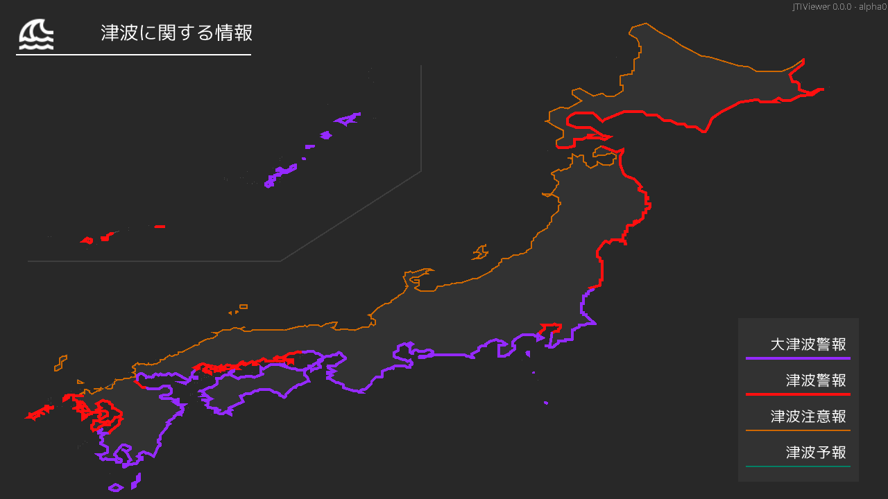

実行要件
| OS | .Net |
|---|---|
| Windows10(version1709)+ x86 / x64 | .Net Framework 4.7.2 |
詳細
このアプリは気象庁XML電文を利用して、津波情報(VTSE41, VTSE51, VTSE52)を表示するものです。
通常の情報をリスト形式で表示する機能のほか、地図を表示する機能、棒読みちゃんに読み上げてもらう機能を搭載しています。
また、各自で取得した電文ファイルやオンライン上の電文を利用して同様に表示させることができます。
 |
 |
|
津波情報をリストで表示する 気象庁など様々な場所から取得した情報(VTSE41, VTSE51, VTSE52)を表示します。 |
|
 |
 |
|
津波情報 WITH 棒読みちゃん 棒読みちゃんとの連携設定で気象庁など様々な場所から取得した情報(VTSE41, VTSE51, VTSE52)を棒読みちゃんに読み上げてもらうことができます。 |
津波情報を地図で表示する (VTSE41に限り)津波情報を地図で表示します。 |